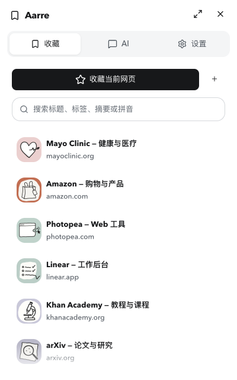

AARRE / 0.6.1 / 2026.09.09
Aarre 0.6.1 视觉验收
本轮对照 NexAlign，统一悬浮滚动条、下拉留白与控件比例，并修复长内容和弹层中的实际排版问题。
51 张最终画面5px 悬浮细条12px 箭头留白明暗主题与窄窗
这些画面来自实际运行的本地开发预览，使用明确标注的隔离测试数据。它们证明本轮界面和交互检查；已安装 Chrome、真实 AI 与云端仍需独立验收。
REFERENCE
对照与问题原貌
NexAlign 图为另一个仓库的存档参考；其余为本轮修复前的实际画面。
01
滚动与渐隐
实际鼠标拖动；中间图暂停真实 CSS 过渡于 40ms，拍摄后恢复播放。
收藏菜单 · 滚动 · 拖动中点击查看原尺寸截图收藏菜单 · 滚动 · 渐隐中间帧点击查看原尺寸截图
收藏菜单 · 滚动 · 闲置点击查看原尺寸截图 02
悬浮菜单与选择
比较宽度、明暗主题、下拉箭头与字段留白。
03
编辑与长内容
窄窗、长备注、长回答与宽表格；这里的 QA 会话没有发送到 AI 服务。
04
完整收藏库
五个功能页、窄窗导航、筛选、设置与编辑弹层。
05
引导、隐私与确认
检查正文滚动、窗口边界、字段比例和确认操作。